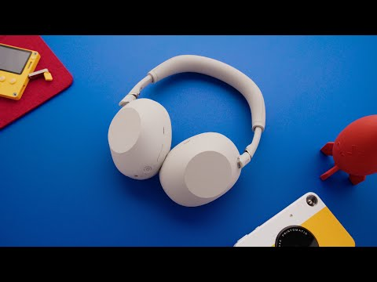
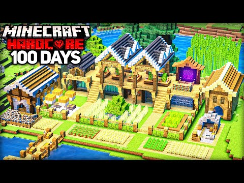
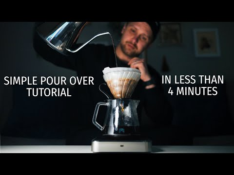
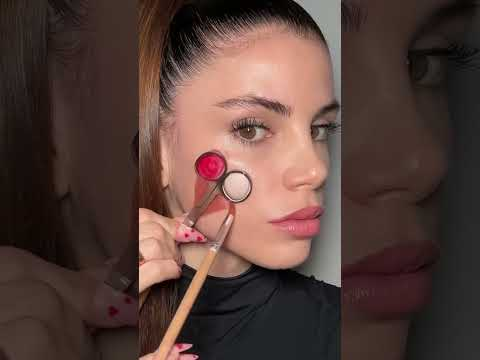

Скачивание, транскрипт, AI-анализ и поиск конкурентов — встроены прямо в интерфейс YouTube, ничего лишнего не открывая.


The Best Wireless Headphones to Buy in 2026

Best Premium Headphones 2026 — Tested & Compared
Не иконки с подписями, а то, как это выглядит на настоящем видео.
Движок сравнивает тему, а не отдельные слова: видео про обзор наушников находит именно другие обзоры наушников, а не всё подряд с тем же брендом в заголовке.
Каждый результат — с процентом совпадения и причиной, почему он в выдаче: общая тема, теги, формат.
Ваше видео: Sony WH-1000XM6 Review
The Best Wireless Headphones to Buy in 2026
Best Premium Headphones 2026 — Tested & Compared
Не просто «похожий канал», а процент совпадения темы, медиана просмотров и уровень активности — чтобы сразу видеть, кто реально конкурент, а кто просто рядом по касательной.
Каждая карточка разворачивается в объяснение, почему канал попал в список.
Лучшие недавние видео с множителем относительно медианы канала (5,1× значит впятеро лучше обычного результата), с повторяющимися паттернами заголовков и с отдельным ИИ-разбором ниши по кнопке.
I Survived 100 Days Building the ULTIMATE BASE
Durmitor National Park — Prutaš Peak Hike
Не нужно вытаскивать баннер через просмотр кода страницы: полный размер и вариант оформления показаны сразу, скачивание — в один клик.
Тепловая карта по дням недели вместо размытого «выходит примерно раз в неделю» — точное время берётся со страницы самого видео, там, где оно уже загрузилось.
На Shorts панель превращается в вертикальную колонку круглых кнопок сбоку — так, как ожидаешь увидеть рядом с лайком и репостом на самом YouTube.

Список реальных доступных качеств для конкретного видео (не общий список «до 1080p», а то, что действительно отдал YouTube), MP4 для видео, MP3 или лучший исходный формат для аудио.
Очередь загрузок с прогрессом, скоростью и оставшимся временем — без открытия сторонних сайтов и без рекламы.
Захватывает именно то, что сейчас на экране, без сторонних расширений и программ для скриншотов. PNG для точности, JPEG — если важен размер файла.
Полный транскрипт с таймкодами и поиском по содержимому — работает и там, где YouTube формально не показывает субтитры (тогда используется альтернативный источник).
Отдельно — генерация таймкодов и извлечение всего видео целиком одной кнопкой.
Никакого отдельного окна — выпадающий список интервала, фиолетовая кнопка «расставить» и кнопка «очистить» встроены в шапку диалога «Mid-roll ad slots», перед стандартными «Back» / «Continue».
Если у канала уже включены автоматические паузы YouTube — кнопки гаснут, а сам чекбокс подсвечивается жёлтым, чтобы было понятно, что нужно сначала выключить его. Здесь показано активное состояние: авточекбокс выключен, и наши кнопки полностью доступны.
Точная дата и время публикации (не «3 дня назад»), категория, язык, статус монетизации, все теги и хештеги, полное описание — и место для собственных заметок.
Кнопка Save на любом видео или канале кладёт его в общую библиотеку. Отдельная страница показывает всё сохранённое по вкладкам — видео, каналы, Shorts, проекты — со счётчиками и карточками: превью, канал, просмотры, дата сохранения.
Тот же список открывается прямо в сайдбаре на YouTube — компактным списком с поиском и сортировкой, без переключения вкладок.
Не проходит модерацию магазинов — устанавливается вручную, как обычно делают разработчики.
chrome://extensions → Режим разработчика → «Загрузить распакованное».
Откройте любое видео на YouTube — панель появится сама.